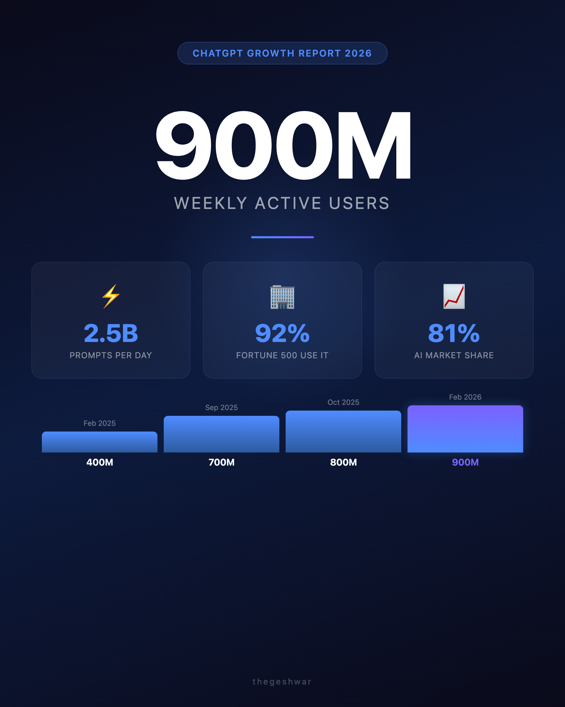
ChatGPT just hit 900M weekly users.
ChatGPT just crossed 900 million weekly active users. Let that sink in. In October 2025 it was 800M. Four months later, another 100 million people joined. That is roughly the population of Egypt showing up in one quarter. Here is the full picture: 📊 2.5 billion prompts flow through ChatGPT every day 🏢 92% of Fortune 500 companies are active users 🌍 5.72 billion monthly visits in January 2026 📈 81% market share among AI assistants This is not a product launch anymore. This is infrastructure. Like email. Like search. The question is no longer "should we adopt AI?" It is "how deeply have we integrated it?" Every company that waits is falling behind a curve that doubles every year. #AI #ChatGPT #OpenAI #TechGrowth #GenerativeAI
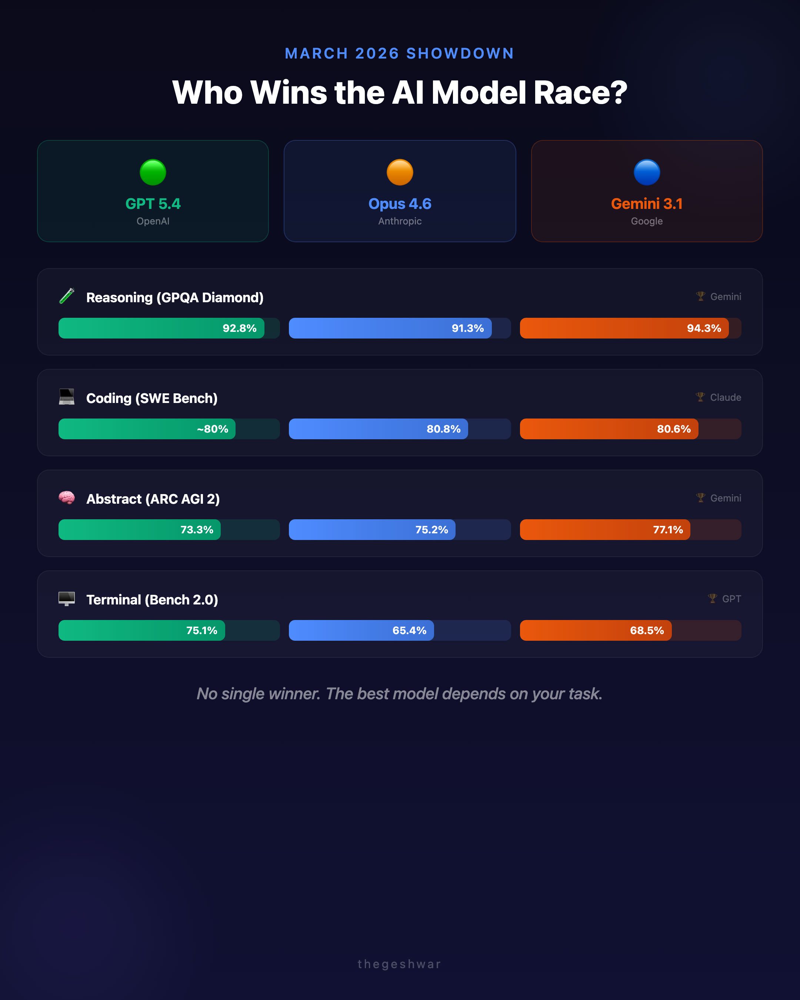
The AI model race is closer than ever.
The 2026 AI model race just got fascinating. GPT 5.4, Claude Opus 4.6, and Gemini 3.1 Pro are now so close in performance that declaring a single winner is impossible. Here is how they compare across key benchmarks: 🧪 Reasoning (GPQA Diamond) Gemini: 94.3% | GPT: 92.8% | Claude: 91.3% 💻 Coding (SWE Bench) Claude: 80.8% | Gemini: 80.6% | GPT: ~80% 🧠 Abstract Reasoning (ARC AGI 2) Gemini: 77.1% | Claude: 75.2% | GPT: 73.3% 📝 Writing Quality Claude leads with 128K token output and natural prose The gap between these models is now 2 to 3 percentage points. That is noise, not dominance. What actually matters now: pricing, latency, developer experience, and how well each model integrates into your workflow. The best model is the one that fits YOUR use case. #AI #LLM #GPT5 #Claude #Gemini #Benchmarks
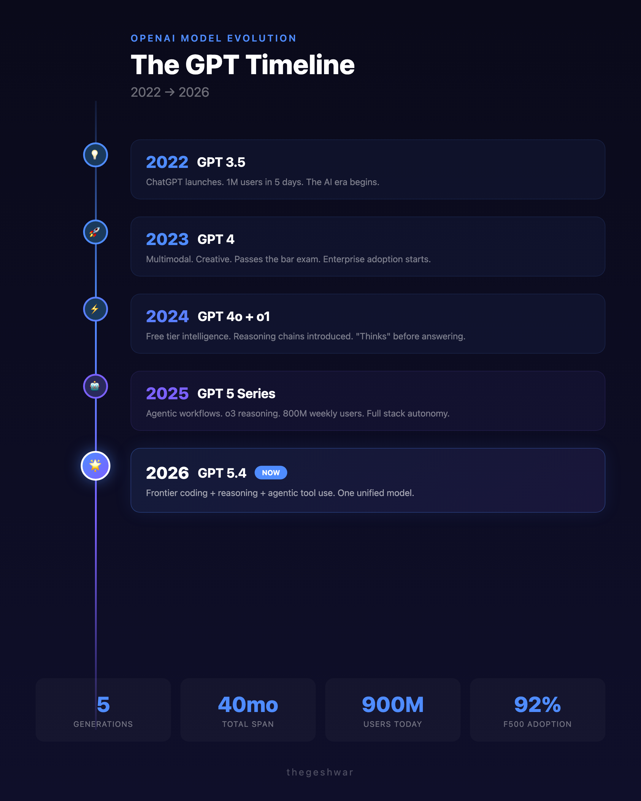
From GPT 3.5 to GPT 5.4 in just 3 years.
In November 2022, GPT 3.5 launched ChatGPT and changed everything. Three years and four months later, GPT 5.4 can autonomously run multi hour coding sessions, reason through graduate level science, and orchestrate complex workflows across tools. Here is the full evolution: 2022 → GPT 3.5: The chatbot that started it all 2023 → GPT 4: Multimodal, creative, reliable 2024 → GPT 4o + o1: Free intelligence + reasoning chains 2025 → GPT 5 series: Agentic workflows arrive 2026 → GPT 5.4: Frontier coding, reasoning, and tool use in one model Every 6 months, a new leap. The models that seemed revolutionary become baselines. The capabilities that felt impossible become table stakes. If you are building anything in tech, understanding this pace is not optional. It is survival. #AI #OpenAI #GPT #LLM #AITimeline #TechEvolution
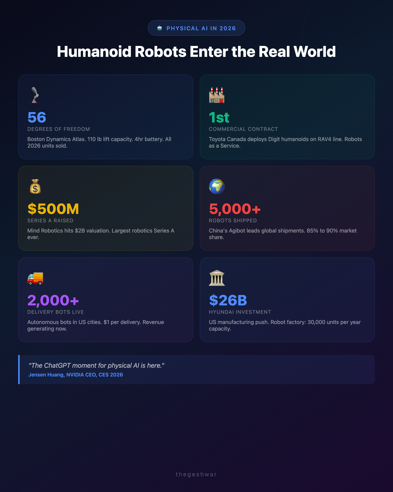
Humanoid robots just left the lab.
Jensen Huang said it: "The ChatGPT moment for physical AI is here." And the numbers back it up. In 2026, humanoid robots are no longer lab demos. They are signing commercial contracts and working factory floors. Here are the facts: 🤖 Boston Dynamics Atlas: 56 degrees of freedom, 110 lb lifting capacity, 4 hour battery with 3 minute hot swap. All 2026 deployments already sold out. 🏭 Toyota Canada signed a Robots as a Service deal with Agility to put Digit humanoids on its RAV4 production line. First formal commercial humanoid contract in North American auto. 💰 Mind Robotics raised $500M in Series A, reaching $2B valuation. 🌍 China's Agibot shipped 5,000+ robots globally. 85 to 90% of global humanoid shipments come from China. 🚚 2,000+ autonomous delivery bots already operate in US cities at $1 per trip. 🏛️ Hyundai committed $26B to US manufacturing including a factory producing 30,000 bots per year. Physical AI just went from "someday" to "shipping now." #AI #Robotics #HumanoidRobots #NVIDIA #BostonDynamics #PhysicalAI
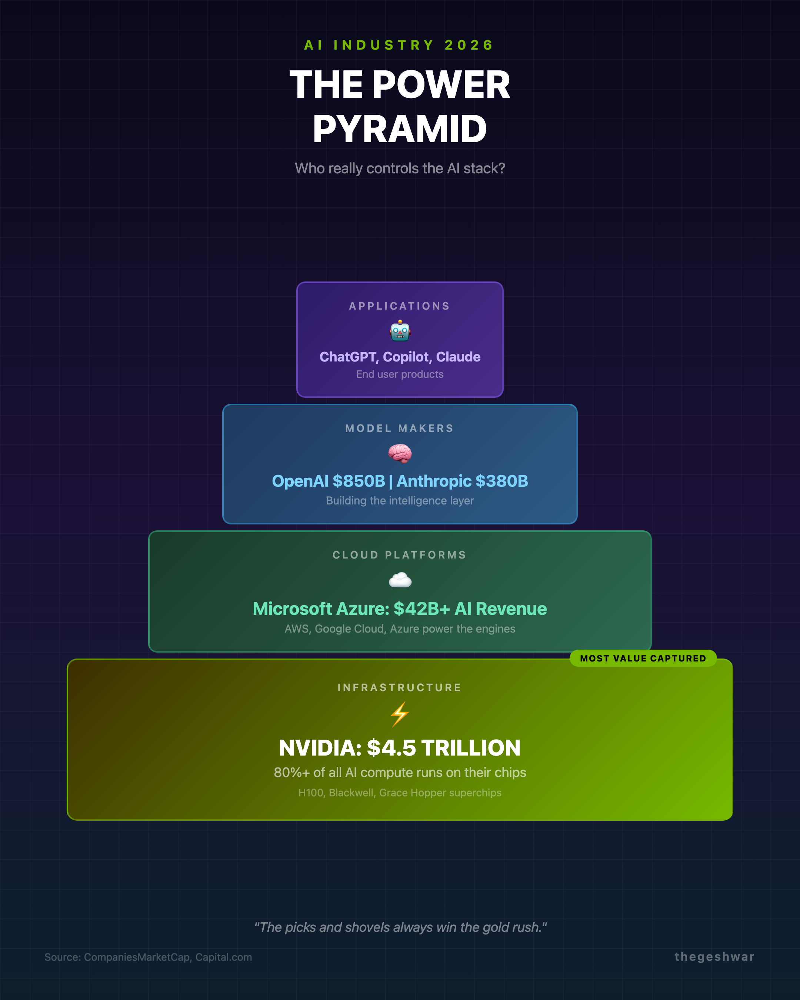
The AI industry has a clear power pyramid. Here's who sits at each level.
The AI industry isn't flat. It's a pyramid. At the base: NVIDIA, controlling 80%+ of AI compute. Their chips are the foundation everything else is built on. $4.5 TRILLION in market cap. Middle tier: cloud platforms like Microsoft Azure, turning AI into enterprise services worth $42B+ annually. At the top: the model makers. OpenAI ($850B), Anthropic ($380B), and others competing to build the smartest systems. But here's what most people miss: value flows downward. The infrastructure layer captures the most. Always has, always will. The picks and shovels always win the gold rush. #AI #NVIDIA #TechStack #AIInvesting #MarketCap
Morgan Stanley says a massive AI breakthrough is coming in H1 2026. The world before and after will look nothing alike.
Morgan Stanley just dropped a warning that should make every professional pay attention. They predict "Transformative AI" will hit in H1 2026, becoming a massive deflationary force. Translation: AI will replicate human work at a fraction of the cost, and it will reshape entire industries. Before Transformative AI: 88% of companies use AI for basic automation. Humans do most cognitive work. Hiring is the primary scaling strategy. After Transformative AI: AI agents handle complex multi step workflows. Workforce reductions become structural, not cyclical. The cost of services drops dramatically across industries. Executives aren't waiting. Large scale workforce changes are already underway. This isn't a prediction about 2030. This is about the next 6 months. Are you ready? #AI #MorganStanley #TransformativeAI #FutureOfWork #Economics
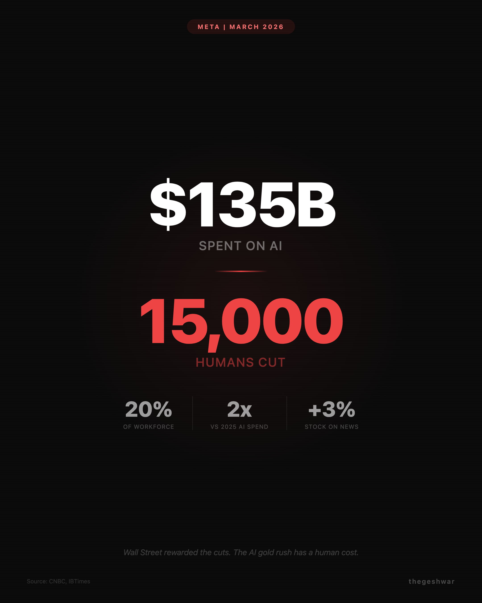
Meta is spending $135 billion on AI this year. And cutting 15,000 humans to pay for it.
Read this number twice. $135,000,000,000. That's what Meta plans to spend on AI infrastructure in 2026. Nearly double last year. Now read this number: 15,000. That's how many human jobs could be cut to help pay for it. Up to 20% of Meta's entire workforce. Reality Labs already lost 1,500 positions. Mid level managers, QA teams, customer support, and internal IT are next. Meta's stock climbed 3% on the layoff news. Wall Street rewarded the cuts. This isn't about efficiency. It's about replacement. The largest social media company on Earth is betting that AI infrastructure is worth more than the people who built it. The AI gold rush has a human cost. And we're watching it happen in real time. #Meta #AI #Layoffs #BigTech #FutureOfWork
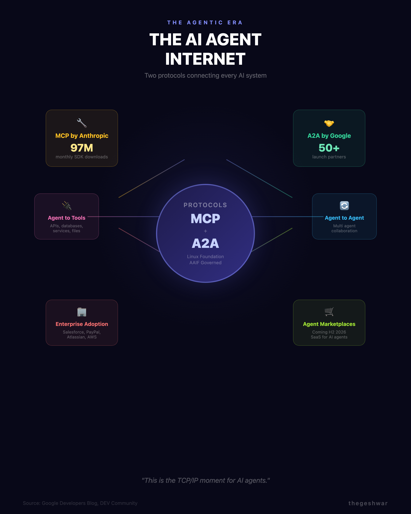
AI agents are getting their own internet. MCP and A2A are the protocols making it happen.
AI agents are getting their own internet. And two protocols are making it happen. At the center: MCP (Model Context Protocol) by Anthropic and A2A (Agent to Agent) by Google. MCP connects agents to tools and data. Think of it as USB for AI. It went from 100K downloads in late 2024 to 97 MILLION monthly SDK downloads by end of 2025. A2A connects agents to each other. It launched with 50+ partners including Salesforce, PayPal, and Atlassian. Both protocols are now governed by the Linux Foundation's Agentic AI Foundation, co founded by OpenAI, Anthropic, Google, Microsoft, AWS, and Block. What's coming next: agent marketplaces in H2 2026 where you can plug in third party AI agents like SaaS subscriptions. We're watching the TCP/IP moment for AI happen in real time. #AI #MCP #A2A #AIAgents #AgenticAI
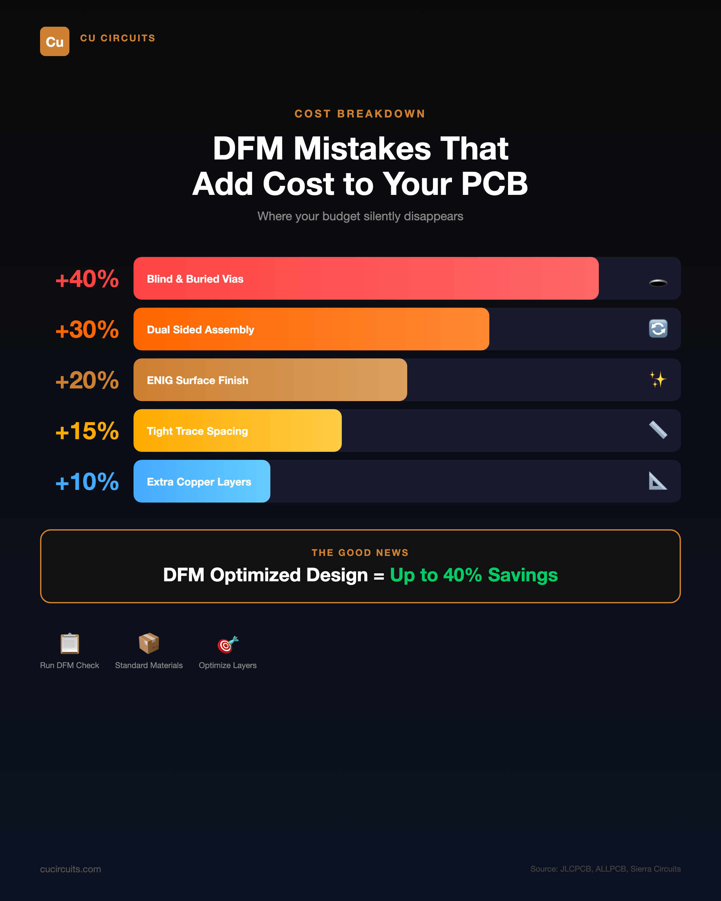
Your PCB design choices are silently eating your budget.
Your design choices are quietly inflating your PCB costs. Here's a visual breakdown of where the money actually goes when DFM rules are ignored. Blind and buried vias? That's +40% on fab costs alone. Dual sided assembly? Another 20 to 30% added. Premium surface finishes like ENIG? 10 to 20% more. And the hidden costs of rework, supplier back and forth, and test failures? Those are the ones that really hurt. The fix is simple: run a DFM check before you send your Gerbers. Optimize layer count. Use standard materials. Avoid unnecessary complexity. A well optimized design can cut production costs by up to 40%. At Cu Circuits, we review every design for manufacturability before it hits the floor. Save this for your next tape out. #PCB #DFM #DesignForManufacturing #CuCircuits #PCBDesign #MakeInIndia #HardwareEngineering
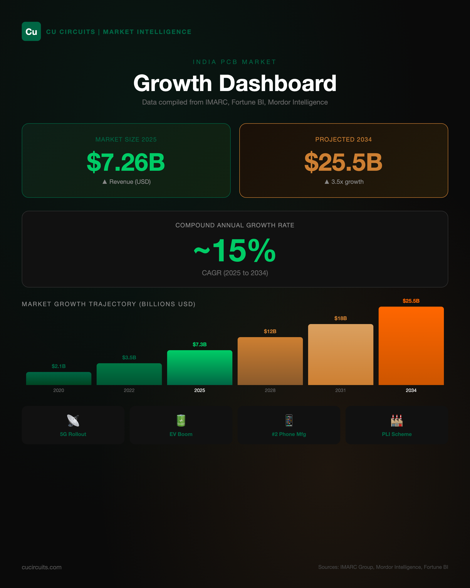
India's PCB market is on an explosive growth trajectory.
India's PCB market isn't just growing. It's accelerating. Here's the data that every hardware founder and product designer in India should know. $7.26 billion in 2025. Projected $25.48 billion by 2034. That's a 15% CAGR. What's fueling this? 5G infrastructure rollout creating massive demand for high frequency boards. EV adoption driving need for sophisticated battery management PCBs. India becoming the world's second largest mobile phone manufacturer. And the PLI scheme putting real money behind domestic production. The shift from import dependent to manufacturing powerhouse is happening now. At Cu Circuits, we're proud to be part of this transformation, building PCBs right here in Chennai. Bookmark this for your next pitch deck. #PCB #IndiaManufacturing #MakeInIndia #CuCircuits #EVs #5G #PLIScheme #HardwareStartup
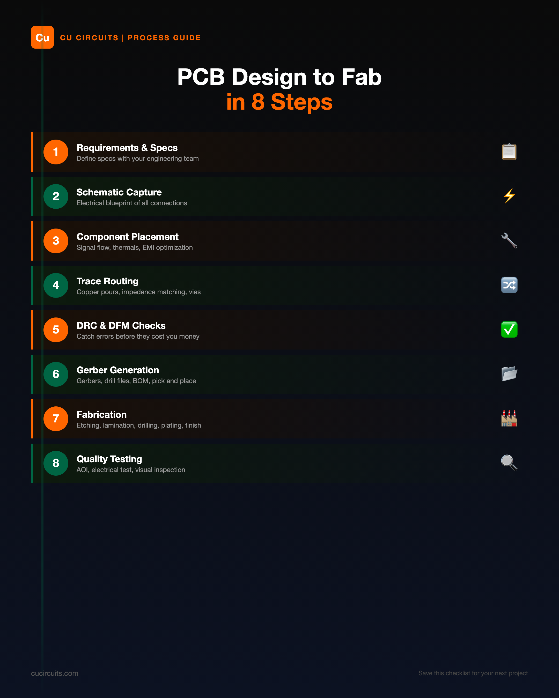
From schematic to finished board: the complete PCB workflow.
Ever wondered what happens between your schematic and a finished PCB? Here's the complete 8 step workflow, from concept to quality tested board. 1. Requirements: Define specs with your full team. 2. Schematic: Capture electrical connections as your blueprint. 3. Placement: Position components for signal flow and thermals. 4. Routing: Trace paths, copper pours, impedance matching. 5. Verification: DRC and DFM checks catch errors before fab. 6. File Generation: Gerbers, drill files, BOM, all production data. 7. Fabrication: Etching, lamination, drilling, plating, finishing. 8. Quality: AOI, electrical testing, visual inspection. Skipping any of these steps costs you time and money downstream. At Cu Circuits, every board goes through this full pipeline with rigorous DFM review built in. Save this as your PCB workflow checklist. #PCB #PCBDesign #PCBFabrication #CuCircuits #HardwareEngineering #Electronics #MakeInIndia
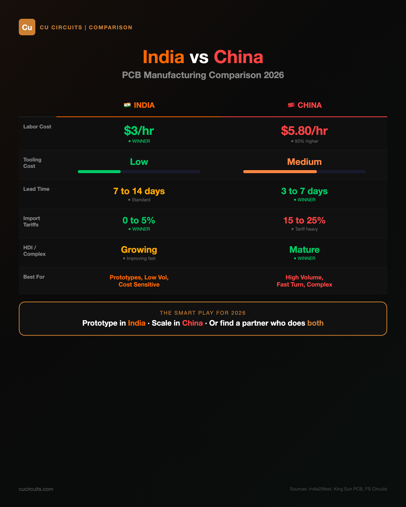
India or China for your next PCB order? Here's the real comparison.
India or China for your next PCB order? We put the real numbers side by side. Labor costs: India at ~$3/hr vs China at ~$5.80/hr. That's a 48% difference. But cost per hour isn't the full picture. China still leads on speed, volume scaling, and complex multilayer boards. Their supply chain ecosystem is decades ahead in integration. India's advantage? Lower tooling costs (great for startups and prototypes), zero or low import tariffs reducing your landed cost, and rapidly improving quality infrastructure backed by PLI incentives. The smart move in 2026: use India for prototyping, low to mid volume, and cost sensitive production. Use China for high volume, tight deadlines, and advanced HDI boards. Or better yet, work with a partner like Cu Circuits who understands both ecosystems. What's your sourcing strategy? Drop it in the comments. #PCB #MakeInIndia #CuCircuits #PCBManufacturing #SupplyChain #HardwareStartup #IndiaManufacturing
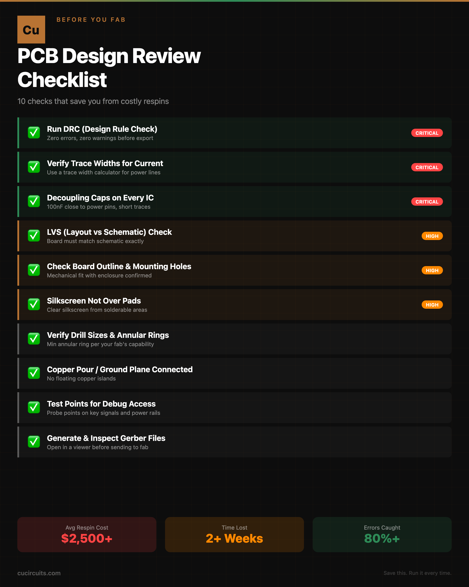
Stop! Before you hit 'Order PCB'...
Stop. Before you send that Gerber file, run through this checklist. We see it every week at Cu Circuits: boards that come back with avoidable errors. Wrong trace widths. Missing decoupling caps. Silkscreen over pads. Drill holes too close to the edge. These are not complex problems. They are checklist problems. Here are 10 critical checks every hardware engineer should run before hitting 'Order PCB.' Save this post. Print it. Tape it to your monitor. Because a $5 checklist review today saves a $500 respin next week. Which check do you most often forget? Drop it in the comments. #PCBDesign #PCBChecklist #DesignForManufacturing #DFM #ElectronicsDesign #CuCircuits #HardwareEngineering #MakeInIndia
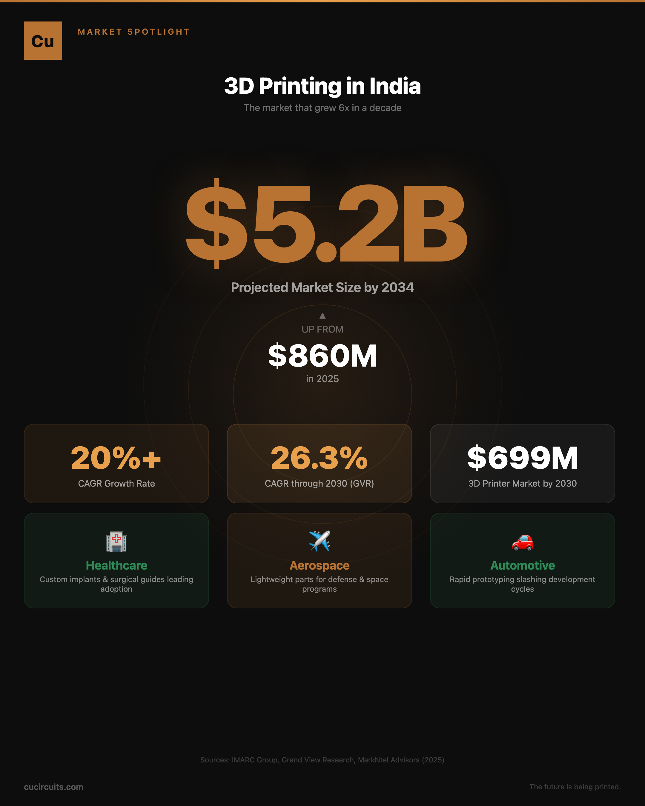
India's 3D printing market is exploding
India's 3D printing market just crossed $860 million. By 2034, it will be worth over $5 billion. That is a 20%+ growth rate, year after year, for the next decade. What is fueling this? Healthcare (custom implants, surgical guides), aerospace (lightweight components), automotive (rapid prototyping), and electronics (functional testing). The shift is clear: 3D printing in India is moving from "nice to have" prototyping tool to "must have" production technology. At Cu Circuits, we are watching this closely. PCB fabrication and 3D printing are converging. The engineers who master both will build the next generation of Indian hardware products. Are you using 3D printing in your product development workflow? Tell us how. #3DPrinting #AdditiveManufacturing #MakeInIndia #IndiaManufacturing #3DPrintingIndia #CuCircuits #FutureOfManufacturing
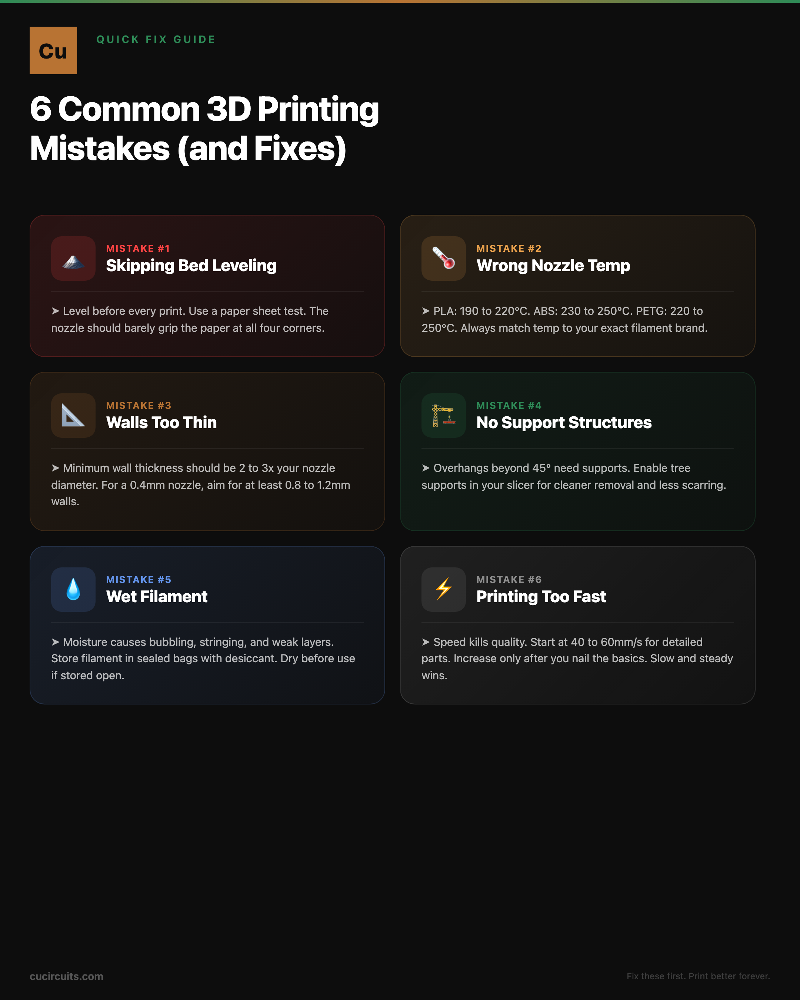
Your 3D prints keep failing? Check these 6 mistakes.
Your 3D prints keep failing and you cannot figure out why? It is almost always one of these six mistakes. We run 3D printers daily at Cu Circuits for prototyping enclosures and jigs. After thousands of prints, we have seen every failure mode. And the fix is usually simpler than you think. 1. Skipping bed leveling (the #1 cause of first layer failures) 2. Wrong temperature for your material 3. Walls too thin to actually print solid 4. Printing overhangs without supports 5. Using filament that absorbed moisture 6. Printing too fast for your setup Save this card. Next time a print fails, check these six things first before you blame the printer. What is your most common print failure? Share below. #3DPrinting #3DPrintingTips #FDM #AdditiveManufacturing #MakerCommunity #CuCircuits #Prototyping #HardwareTips
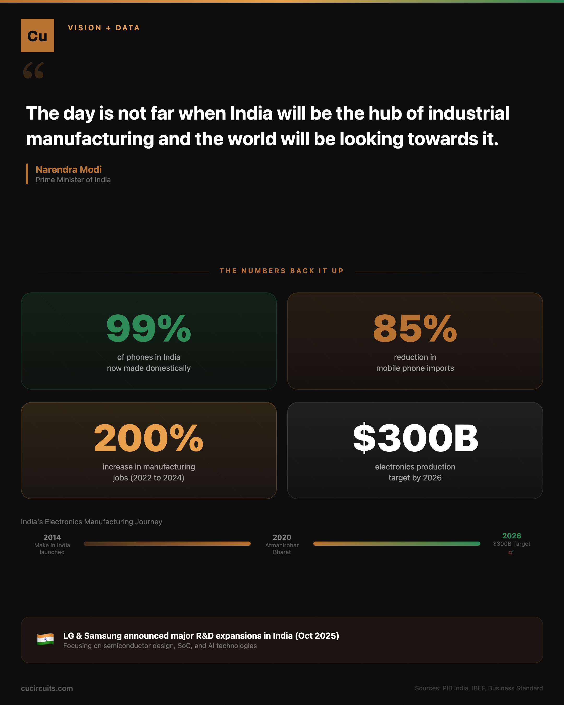
99% of phones in India are now made in India
"The day is not far when India will be the hub of industrial manufacturing and the world will be looking towards it." PM Narendra Modi said this. And the numbers are proving him right. 99% of mobile phones sold in India are now manufactured domestically. Mobile imports dropped 85%. Manufacturing jobs surged 200% between 2022 and 2024. India is targeting $300 billion in electronics production. This is not distant future talk. This is happening now. At Cu Circuits, we are proud to be part of this story. Every PCB we fabricate in Chennai is one more component that does not need to be imported. Every 3D printed prototype we deliver helps an Indian hardware startup move faster. The manufacturing revolution is not coming. It is here. What are you building? We would love to fabricate it. #MakeInIndia #IndiaManufacturing #ElectronicsManufacturing #PCBManufacturing #CuCircuits #HardwareStartup #AtmanirbharBharat